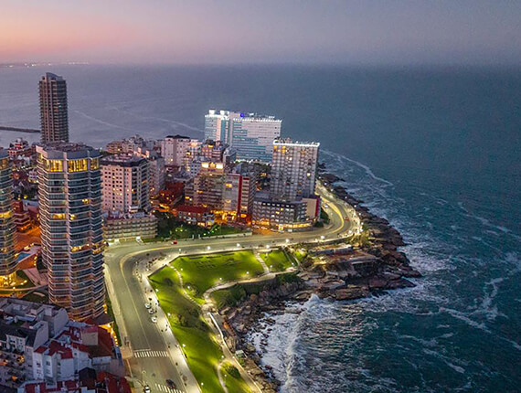
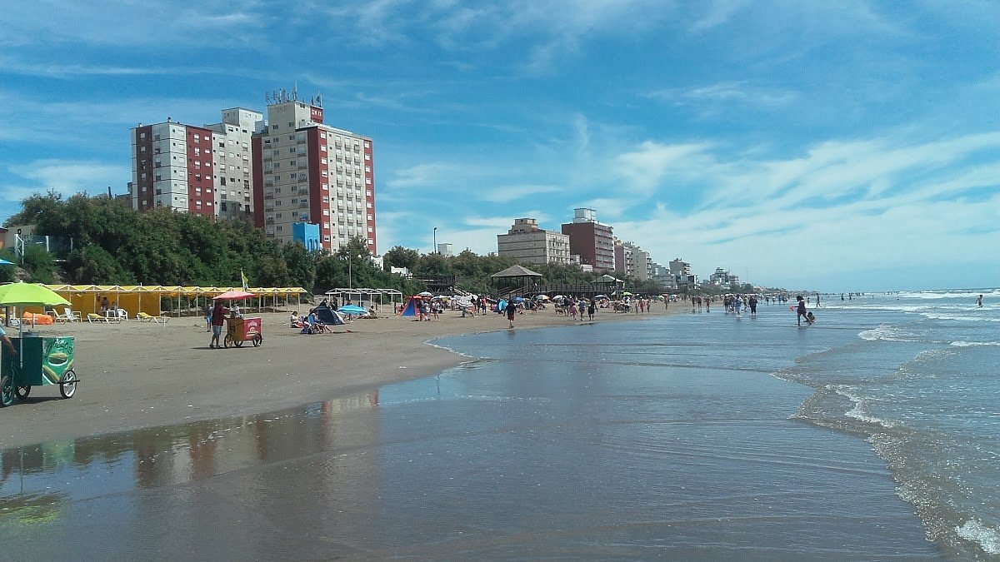
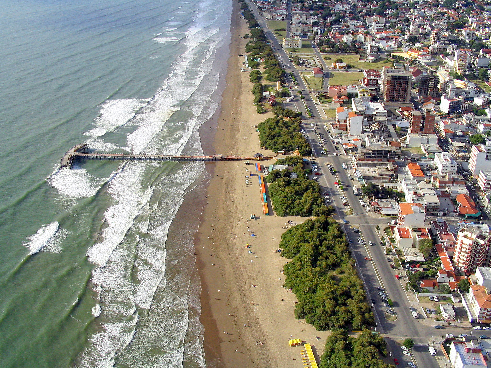

Mar del Plata
La ciudad feliz. Disfruta de sus extensas playas, su icónico puerto y su vibrante vida nocturna.
Descargar Itinerario (PDF)
La ciudad feliz. Disfruta de sus extensas playas, su icónico puerto y su vibrante vida nocturna.
Descargar Itinerario (PDF)
Un destino tranquilo y familiar en el Partido de la Costa, famoso por sus dunas y su laberinto.
Descargar Itinerario (PDF)
Playas apacibles, un hermoso muelle de pesca y un centro comercial pintoresco para disfrutar en familia.
Descargar Itinerario (PDF)